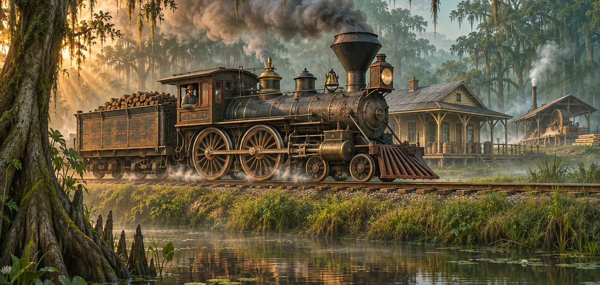

Future project · Windows / Steam
Iron Dominion
Inherit a railroad. Decide what it becomes.
It’s 1885 in Jonestown, Louisiana. The Jones Railroad is yours, along with aging locomotives and debts that come due whether trains run or sit idle. Start by getting timber to the sawmill. As freight starts moving, decide where to lay the next mile of track and which contracts are worth taking on.
In development for Windows on Steam. Release date to be announced.

What you’ll do
Lay track and run the line
Survey routes, build yards and sidings, and schedule steam trains for freight, passengers, and mail. A shorter route can cost more to build or slow down a loaded train.
Make Jonestown prosper
Deliver logs to the sawmill, move finished lumber to market, and connect your rail yard to river trade. Your decisions about wages, safety, and debt shape the company town.
Run your own locomotive works
Build and repair locomotives and rolling stock using shop time, labor, and materials. A contract to build an engine for a rival can keep the shops busy and give that railroad an advantage.
Compete beyond Louisiana
Bid against rival railroads for routes and contracts as you expand into new regions. Choose where to invest, where to partner, and when to walk away from a deal.
Two ways to run your railroad
Empire Mode streamlines construction so you can focus on routes, contracts, and growth. Living History Mode lets you watch surveyors mark routes, construction crews lay track, and workers turn delivered materials into goods.